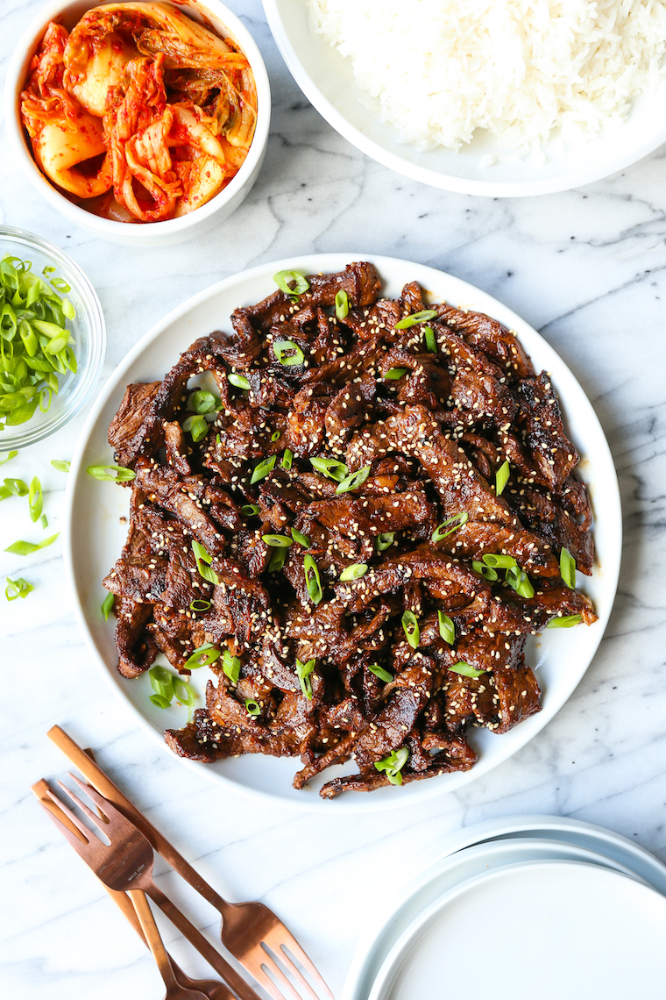

As a proud Korean-American, I would be remiss if I did not include bulgogi on this recipe website. If you aren't familiar with this dish, just know that it is a beautiful mixture of savory goodness taking the form of marinated beef.
This is a dish that my mother made on occasion, but it was always a treat whenever it was served on the dinner table. Bulgogi tastes best when it's prepared on a grill, but for those without access to one, this recipe is for you.